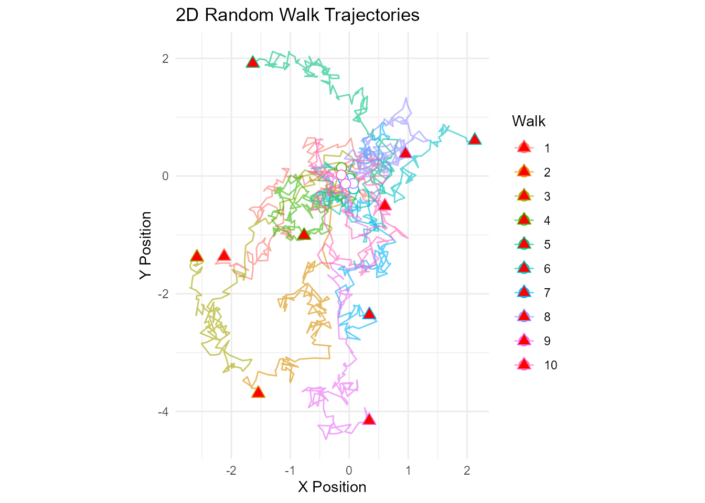
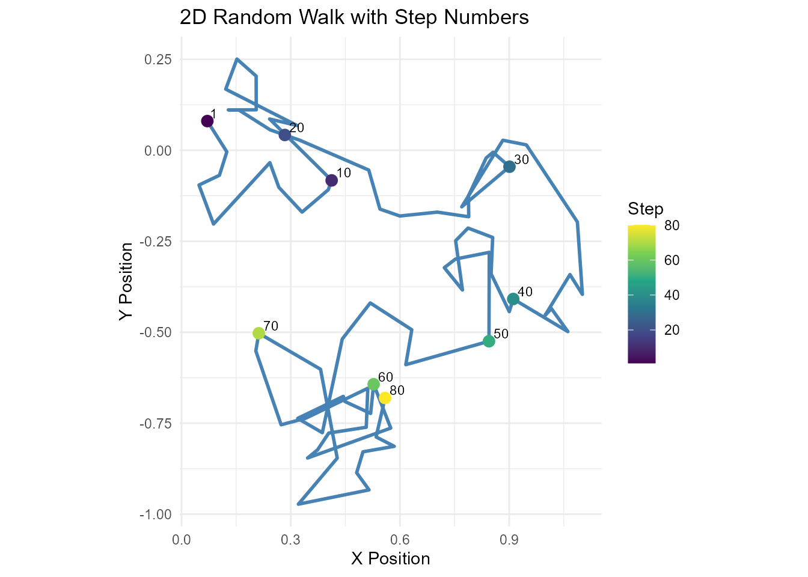
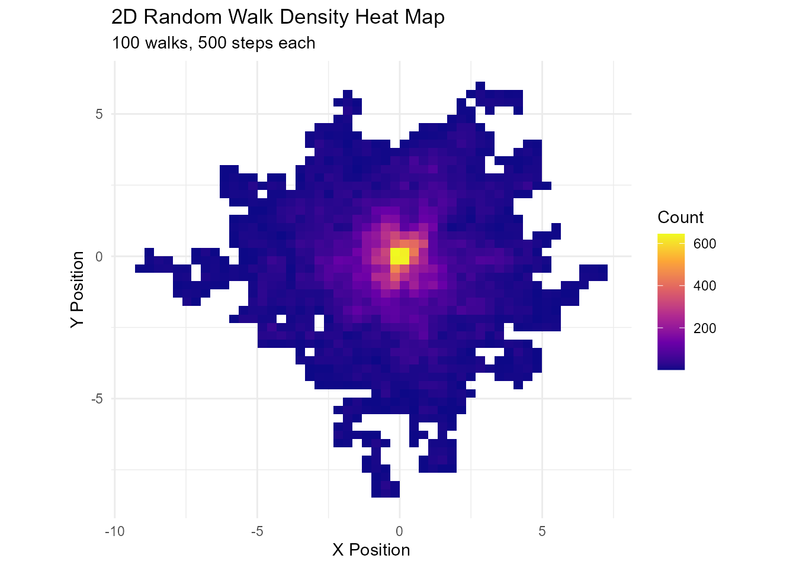
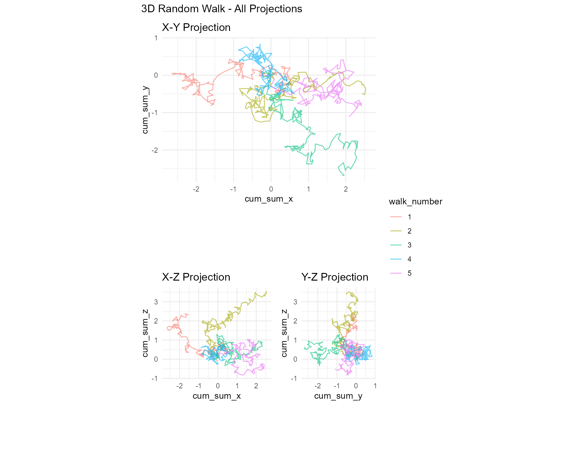

RandomWalker supports random walks in 1D, 2D, and 3D space. This guide covers everything you need to know about working with multi-dimensional random walks.
Overview
What are Multi-Dimensional Random Walks?
A multi-dimensional random walk extends the concept of a 1D random walk into higher-dimensional spaces:
- 1D: Movement along a line (left/right, up/down)
- 2D: Movement on a plane (x and y coordinates)
- 3D: Movement in space (x, y, and z coordinates)
When to Use Multi-Dimensional Walks
2D Walks: - Particle diffusion in a plane - Animal movement patterns - Robot navigation - 2D cellular automata - Currency exchange rates (two currencies vs reference)
3D Walks: - Particle diffusion in space - Molecular dynamics - Drone or aircraft movement - 3D cellular automata - Financial modeling (multiple asset classes)
Generating Multi-Dimensional Walks
Basic Syntax
All random walk generator functions support the
.dimensions parameter:
# 1D walk (default)
walk_1d <- random_normal_walk(.num_walks = 5, .n = 100, .dimensions = 1)
# 2D walk
walk_2d <- random_normal_walk(.num_walks = 5, .n = 100, .dimensions = 2)
# 3D walk
walk_3d <- random_normal_walk(.num_walks = 5, .n = 100, .dimensions = 3)All Distributions Support Multi-Dimensions
Every continuous distribution generator supports 1D, 2D, and 3D:
# 2D Brownian motion
brownian_motion(.num_walks = 10, .n = 500, .dimensions = 2)
# 3D geometric Brownian motion
geometric_brownian_motion(
.num_walks = 10,
.n = 500,
.initial_value = 100,
.dimensions = 3
)
# 2D Cauchy walk (heavy tails)
random_cauchy_walk(.num_walks = 10, .n = 200, .dimensions = 2)
# 3D exponential walk
random_exponential_walk(.num_walks = 5, .n = 300, .dimensions = 3)Understanding the Data Structure
Column Naming Convention
1D Walk Columns:
walk_number, step_number, y, cum_sum_y, cum_prod_y, cum_min_y, cum_max_y, cum_mean_y2D Walk Columns:
walk_number, step_number, x, y,
cum_sum_x, cum_sum_y,
cum_prod_x, cum_prod_y,
cum_min_x, cum_min_y,
cum_max_x, cum_max_y,
cum_mean_x, cum_mean_y3D Walk Columns:
walk_number, step_number, x, y, z,
cum_sum_x, cum_sum_y, cum_sum_z,
cum_prod_x, cum_prod_y, cum_prod_z,
(and so on for each dimension)Inspecting Multi-Dimensional Data
# 2D walk
walk_2d <- random_normal_walk(.num_walks = 3, .n = 100, .dimensions = 2)
# View structure
head(walk_2d, 10)
#> # A tibble: 10 × 14
#> walk_number step_number x y cum_sum_x cum_sum_y cum_prod_x
#> <fct> <int> <dbl> <dbl> <dbl> <dbl> <dbl>
#> 1 1 1 0.0106 0.0769 0.0106 0.0769 0
#> 2 1 2 0.133 0.153 0.143 0.230 0
#> 3 1 3 -0.0742 -0.0912 0.0692 0.138 0
#> 4 1 4 -0.0562 -0.00276 0.0130 0.136 0
#> 5 1 5 0.214 0.0846 0.227 0.220 0
#> 6 1 6 0.262 0.0412 0.489 0.261 0
#> 7 1 7 0.0588 0.157 0.548 0.419 0
#> 8 1 8 0.0122 -0.127 0.560 0.291 0
#> 9 1 9 -0.0742 -0.0339 0.486 0.258 0
#> 10 1 10 0.106 -0.0705 0.592 0.187 0
#> # ℹ 7 more variables: cum_prod_y <dbl>, cum_min_x <dbl>, cum_min_y <dbl>,
#> # cum_max_x <dbl>, cum_max_y <dbl>, cum_mean_x <dbl>, cum_mean_y <dbl>
names(walk_2d)
#> [1] "walk_number" "step_number" "x" "y" "cum_sum_x"
#> [6] "cum_sum_y" "cum_prod_x" "cum_prod_y" "cum_min_x" "cum_min_y"
#> [11] "cum_max_x" "cum_max_y" "cum_mean_x" "cum_mean_y"
# 3D walk
walk_3d <- random_normal_walk(.num_walks = 3, .n = 100, .dimensions = 3)
# View structure
head(walk_3d, 10)
#> # A tibble: 10 × 20
#> walk_number step_number x y z cum_sum_x cum_sum_y
#> <fct> <int> <dbl> <dbl> <dbl> <dbl> <dbl>
#> 1 1 1 0.0294 -0.0985 0.0475 0.0294 -0.0985
#> 2 1 2 -0.222 -0.0523 0.0483 -0.193 -0.151
#> 3 1 3 -0.0533 0.178 -0.0974 -0.246 0.0267
#> 4 1 4 -0.0574 0.204 -0.142 -0.304 0.231
#> 5 1 5 0.0642 -0.161 0.194 -0.240 0.0701
#> 6 1 6 0.0773 0.0458 0.0483 -0.162 0.116
#> 7 1 7 0.0484 0.101 0.180 -0.114 0.216
#> 8 1 8 -0.102 -0.161 -0.00401 -0.216 0.0554
#> 9 1 9 -0.106 0.178 -0.146 -0.322 0.233
#> 10 1 10 -0.120 -0.0148 0.0507 -0.442 0.218
#> # ℹ 13 more variables: cum_sum_z <dbl>, cum_prod_x <dbl>, cum_prod_y <dbl>,
#> # cum_prod_z <dbl>, cum_min_x <dbl>, cum_min_y <dbl>, cum_min_z <dbl>,
#> # cum_max_x <dbl>, cum_max_y <dbl>, cum_max_z <dbl>, cum_mean_x <dbl>,
#> # cum_mean_y <dbl>, cum_mean_z <dbl>
names(walk_3d)
#> [1] "walk_number" "step_number" "x" "y" "z"
#> [6] "cum_sum_x" "cum_sum_y" "cum_sum_z" "cum_prod_x" "cum_prod_y"
#> [11] "cum_prod_z" "cum_min_x" "cum_min_y" "cum_min_z" "cum_max_x"
#> [16] "cum_max_y" "cum_max_z" "cum_mean_x" "cum_mean_y" "cum_mean_z"Visualizing 2D Walks
Basic 2D Trajectory Plot
# Generate 2D walk
walk_2d <- random_normal_walk(.num_walks = 10, .n = 200, .dimensions = 2)
# Plot trajectories
ggplot(walk_2d, aes(x = cum_sum_x, y = cum_sum_y, color = walk_number)) +
geom_path(alpha = 0.6, linewidth = 0.5) +
geom_point(data = walk_2d %>% filter(step_number == 1),
size = 3, shape = 21, fill = "white") + # Start points
geom_point(data = walk_2d %>% group_by(walk_number) %>% slice_max(step_number),
size = 3, shape = 24, fill = "red") + # End points
coord_equal() +
theme_minimal() +
labs(
title = "2D Random Walk Trajectories",
x = "X Position",
y = "Y Position",
color = "Walk"
)
2D Walk with Step Numbers
# Generate single walk
walk_2d <- random_normal_walk(.num_walks = 1, .n = 100, .dimensions = 2)
# Plot with step labels at intervals
walk_2d_labeled <- walk_2d %>%
filter(step_number %% 10 == 0 | step_number == 1)
ggplot(walk_2d, aes(x = cum_sum_x, y = cum_sum_y)) +
geom_path(color = "steelblue", linewidth = 1) +
geom_point(data = walk_2d_labeled, aes(color = step_number), size = 3) +
geom_text(data = walk_2d_labeled, aes(label = step_number),
hjust = -0.3, vjust = -0.3, size = 3) +
scale_color_viridis_c() +
coord_equal() +
theme_minimal() +
labs(
title = "2D Random Walk with Step Numbers",
x = "X Position",
y = "Y Position",
color = "Step"
)
Heat Map of 2D Walk Density
library(ggplot2)
# Generate many walks
walk_2d <- random_normal_walk(.num_walks = 100, .n = 500, .dimensions = 2)
# Create density heat map
ggplot(walk_2d, aes(x = cum_sum_x, y = cum_sum_y)) +
geom_bin2d(bins = 50) +
scale_fill_viridis_c(option = "plasma") +
coord_equal() +
theme_minimal() +
labs(
title = "2D Random Walk Density Heat Map",
subtitle = "100 walks, 500 steps each",
x = "X Position",
y = "Y Position",
fill = "Count"
)
Animated 2D Walk
library(ggplot2)
library(gganimate)
# Generate walk
walk_2d <- random_normal_walk(.num_walks = 5, .n = 100, .dimensions = 2)
# Create animation
p <- ggplot(walk_2d, aes(x = cum_sum_x, y = cum_sum_y, color = walk_number)) +
geom_path(aes(group = walk_number), alpha = 0.5) +
geom_point(size = 3) +
coord_equal() +
theme_minimal() +
labs(title = "Step: {frame_along}", x = "X", y = "Y") +
transition_reveal(step_number)
# Render
animate(p, nframes = 100, fps = 10)Visualizing 3D Walks
3D Scatter Plot
library(plotly)
# Generate 3D walk
walk_3d <- random_normal_walk(.num_walks = 5, .n = 200, .dimensions = 3)
# Create 3D plot
plot_ly(
data = walk_3d,
x = ~cum_sum_x,
y = ~cum_sum_y,
z = ~cum_sum_z,
color = ~walk_number,
type = "scatter3d",
mode = "lines",
line = list(width = 2)
) %>%
layout(
title = "3D Random Walk Trajectories",
scene = list(
xaxis = list(title = "X Position"),
yaxis = list(title = "Y Position"),
zaxis = list(title = "Z Position")
)
)3D Interactive with Markers
library(plotly)
library(dplyr)
# Generate 3D walk
walk_3d <- random_normal_walk(.num_walks = 3, .n = 100, .dimensions = 3)
# Mark start and end points
walk_with_markers <- walk_3d %>%
mutate(
point_type = case_when(
step_number == 1 ~ "Start",
step_number == max(step_number) ~ "End",
TRUE ~ "Path"
)
)
# Create plot
plot_ly(data = walk_with_markers) %>%
# Add paths
add_trace(
data = walk_with_markers %>% filter(point_type == "Path"),
x = ~cum_sum_x, y = ~cum_sum_y, z = ~cum_sum_z,
color = ~walk_number,
type = "scatter3d",
mode = "lines",
line = list(width = 2),
showlegend = FALSE
) %>%
# Add start points
add_trace(
data = walk_with_markers %>% filter(point_type == "Start"),
x = ~cum_sum_x, y = ~cum_sum_y, z = ~cum_sum_z,
type = "scatter3d",
mode = "markers",
marker = list(size = 8, color = "green", symbol = "circle"),
name = "Start"
) %>%
# Add end points
add_trace(
data = walk_with_markers %>% filter(point_type == "End"),
x = ~cum_sum_x, y = ~cum_sum_y, z = ~cum_sum_z,
type = "scatter3d",
mode = "markers",
marker = list(size = 8, color = "red", symbol = "diamond"),
name = "End"
) %>%
layout(
title = "3D Random Walk with Start/End Markers",
scene = list(
xaxis = list(title = "X"),
yaxis = list(title = "Y"),
zaxis = list(title = "Z")
)
)3D Projections
library(ggplot2)
library(patchwork)
# Generate 3D walk
walk_3d <- random_normal_walk(.num_walks = 5, .n = 200, .dimensions = 3)
# X-Y projection
p_xy <- ggplot(walk_3d, aes(x = cum_sum_x, y = cum_sum_y, color = walk_number)) +
geom_path(alpha = 0.6) +
coord_equal() +
theme_minimal() +
labs(title = "X-Y Projection")
# X-Z projection
p_xz <- ggplot(walk_3d, aes(x = cum_sum_x, y = cum_sum_z, color = walk_number)) +
geom_path(alpha = 0.6) +
coord_equal() +
theme_minimal() +
labs(title = "X-Z Projection")
# Y-Z projection
p_yz <- ggplot(walk_3d, aes(x = cum_sum_y, y = cum_sum_z, color = walk_number)) +
geom_path(alpha = 0.6) +
coord_equal() +
theme_minimal() +
labs(title = "Y-Z Projection")
# Combine
p_xy / (p_xz | p_yz) +
plot_layout(guides = "collect") +
plot_annotation(title = "3D Random Walk - All Projections")
Distance and Spatial Analysis
Euclidean Distance from Origin
library(dplyr)
# 2D walk
walk_2d <- random_normal_walk(.num_walks = 10, .n = 500, .dimensions = 2)
# Calculate distance
walk_with_distance <- walk_2d %>%
euclidean_distance(.x = x, .y = y)
# Visualize distance over time
library(ggplot2)
ggplot(walk_with_distance, aes(x = step_number, y = distance, color = walk_number)) +
geom_line(alpha = 0.7) +
# Add theoretical expectation
geom_line(aes(y = sqrt(2 * step_number)), color = "black", linetype = "dashed", linewidth = 1) +
theme_minimal() +
labs(
title = "Distance from Origin in 2D Random Walk",
subtitle = "Dashed line shows theoretical E[distance] = sqrt(2n)",
x = "Step",
y = "Euclidean Distance"
)3D Distance Analysis
# 3D walk
walk_3d <- random_normal_walk(.num_walks = 100, .n = 1000, .dimensions = 3)
# Calculate distance
walk_with_distance <- walk_3d %>%
euclidean_distance(.x = x, .y = z)
# Analyze distance distribution at specific steps
library(dplyr)
distance_at_steps <- walk_with_distance %>%
filter(step_number %in% c(100, 250, 500, 1000)) %>%
group_by(step_number) %>%
reframe(
mean_dist = mean(distance),
sd_dist = sd(distance),
theoretical_mean = sqrt(3 * step_number)
)
print(distance_at_steps)Radial Distribution Function
library(dplyr)
library(ggplot2)
# Generate many 2D walks
walk_2d <- random_normal_walk(.num_walks = 500, .n = 200, .dimensions = 2)
# Get final positions
final_positions <- walk_2d %>%
group_by(walk_number) %>%
slice_max(step_number) %>%
euclidean_distance(.x = x, .y = y)
# Plot radial distribution
ggplot(final_positions, aes(x = distance)) +
geom_histogram(aes(y = after_stat(density)), bins = 50, fill = "steelblue", alpha = 0.7) +
geom_density(color = "darkblue", linewidth = 1) +
theme_minimal() +
labs(
title = "Radial Distribution of Final Positions (2D)",
subtitle = "500 walks, 200 steps each",
x = "Distance from Origin",
y = "Density"
)Convex Hull (2D)
library(dplyr)
library(ggplot2)
# Generate 2D walks
walk_2d <- random_normal_walk(.num_walks = 20, .n = 200, .dimensions = 2)
# Get final positions
final_positions <- walk_2d %>%
group_by(walk_number) %>%
slice_max(step_number)
# Calculate convex hull
hull <- chull(final_positions$cum_sum_x, final_positions$cum_sum_y)
hull_points <- final_positions[c(hull, hull[1]), ] # Close the polygon
# Plot
ggplot(walk_2d, aes(x = cum_sum_x, y = cum_sum_y, color = walk_number)) +
geom_path(alpha = 0.3) +
geom_point(data = final_positions, size = 3) +
geom_polygon(data = hull_points, aes(x = cum_sum_x, y = cum_sum_y),
fill = NA, color = "black", linewidth = 1) +
coord_equal() +
theme_minimal() +
labs(
title = "2D Random Walks with Convex Hull",
subtitle = "Black polygon shows convex hull of final positions",
x = "X Position",
y = "Y Position"
)Use Cases
Case 1: Particle Diffusion (2D)
# Simulate particle diffusion in a petri dish
particles <- brownian_motion(
.num_walks = 50,
.n = 1000,
.delta_time = 0.1,
.dimensions = 2
)
# Visualize
particles %>%
euclidean_distance(.x = x, .y = y) %>%
ggplot(aes(x = step_number, y = distance, color = walk_number)) +
geom_line(alpha = 0.3) +
stat_summary(aes(group = 1), fun = mean, geom = "line",
color = "red", linewidth = 1.5) +
theme_minimal() +
labs(
title = "Particle Diffusion in 2D",
subtitle = "Red line shows mean distance",
x = "Time Step",
y = "Distance from Origin"
)Case 2: Drone Flight Path (3D)
# Simulate drone wandering in 3D space
drone_path <- brownian_motion(
.num_walks = 1,
.n = 500,
.delta_time = 0.5,
.initial_value = 100, # Start at 100m altitude
.dimensions = 3
)
# 3D visualization
library(plotly)
plot_ly(
data = drone_path,
x = ~cum_sum_x,
y = ~cum_sum_y,
z = ~cum_sum_z,
type = "scatter3d",
mode = "lines+markers",
marker = list(
size = 2,
color = ~step_number,
colorscale = "Viridis",
showscale = TRUE
),
line = list(width = 2, color = "steelblue")
) %>%
layout(
title = "Drone Flight Path (3D Random Walk)",
scene = list(
xaxis = list(title = "X (meters)"),
yaxis = list(title = "Y (meters)"),
zaxis = list(title = "Altitude (meters)")
)
)Case 3: Animal Movement (2D)
# Simulate animal foraging behavior
# Using Cauchy walk for heavy tails (occasional long jumps)
animal_movement <- random_cauchy_walk(
.num_walks = 1,
.n = 200,
.scale = 1,
.dimensions = 2
)
# Add "home" location
animal_movement <- animal_movement %>%
mutate(
distance_from_home = sqrt(cum_sum_x^2 + cum_sum_y^2)
)
# Plot
ggplot(animal_movement, aes(x = cum_sum_x, y = cum_sum_y)) +
geom_path(color = "darkgreen", linewidth = 0.8, alpha = 0.6) +
geom_point(aes(color = distance_from_home), size = 2) +
geom_point(x = 0, y = 0, size = 5, color = "red", shape = 17) + # Home
scale_color_viridis_c(option = "magma") +
coord_equal() +
theme_minimal() +
labs(
title = "Animal Foraging Path (2D Cauchy Walk)",
subtitle = "Red triangle marks home location",
x = "X Position",
y = "Y Position",
color = "Distance\nfrom Home"
)Best Practices
Performance Considerations
For many walks or long walks in 3D:
# Reduce number of dimensions if not needed
walk_2d <- random_normal_walk(.num_walks = 100, .n = 1000, .dimensions = 2)
# Instead of
# walk_3d <- random_normal_walk(.num_walks = 100, .n = 1000, .dimensions = 3)For visualization:
# Sample walks or steps for large datasets
walk_large <- random_normal_walk(.num_walks = 1000, .n = 1000, .dimensions = 2)
# Sample walks
walk_sample <- walk_large %>%
filter(walk_number %in% sample(levels(walk_number), 50))
# Or downsample steps
walk_downsample <- walk_large %>%
filter(step_number %% 10 == 0)Boundary Conditions
Implement reflecting or absorbing boundaries:
# Reflecting boundary (bounce back)
walk_2d <- random_normal_walk(.num_walks = 10, .n = 500, .dimensions = 2)
walk_bounded <- walk_2d %>%
mutate(
cum_sum_x = pmin(pmax(cum_sum_x, -50), 50), # Bound between -50 and 50
cum_sum_y = pmin(pmax(cum_sum_y, -50), 50)
)
# Visualize
ggplot(walk_bounded, aes(x = cum_sum_x, y = cum_sum_y, color = walk_number)) +
geom_path(alpha = 0.6) +
geom_rect(xmin = -50, xmax = 50, ymin = -50, ymax = 50,
fill = NA, color = "black", linewidth = 1) +
coord_equal() +
theme_minimal() +
labs(title = "2D Walk with Reflecting Boundaries")Next Steps
For more information on RandomWalker, explore these resources:
- Getting Started - Introduction to random walks
- Basic Concepts - Core ideas and terminology
- Continuous Distribution Generators - Walks based on continuous distributions
- Discrete Distribution Generators - Walks based on discrete distributions
- FAQ - Frequently asked questions
- API Reference - Complete function documentation Need more examples? Check out the package documentation and vignettes for additional use cases and applications!